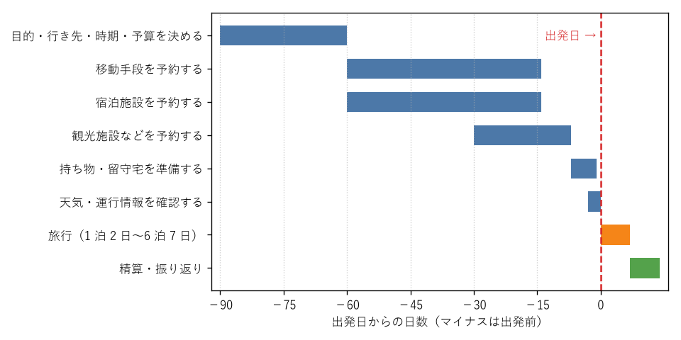

2. 旅行の全体の流れ
旅行の準備は、行き先と時期を決めることから始まり、交通機関と宿泊施設の予約、持ち物の準備を経て出発に至る。帰宅後には費用の精算と振り返りがある。この章では、まず全体の流れをつかみ、次に旅行の日数による準備の違いを確認する。
2.1. 時期ごとの流れ
旅行の前後で行うことを時期ごとに図に示す。青色の帯は出発前、橙色の帯は旅行中、緑色の帯は帰宅後に行う作業である。図の時期は、繁忙期の旅行や航空機を使う旅行を想定した早めの目安であり、閑散期の近場の旅行であれば、1〜2 週間前から準備を始めても間に合うことが多い。

図: 旅行の前後で行う作業の時期
各時期の主な作業は次のとおりである。
時期 |
主な作業 |
参照する章 |
|---|---|---|
2〜3 か月前 |
旅行の目的、行き先、時期、日数、予算を決める。同行者と希望をすり合わせる。 |
|
1〜2 か月前 |
移動手段と宿泊施設を予約する。キャンセル規定を確認する。 |
|
2 週間〜1 か月前 |
観光施設や飲食店の予約、レンタカーの予約、行程表の作成を行う。 |
|
1 週間前〜前日 |
持ち物と留守宅を準備し、天気と運行情報を確認する。 |
|
旅行中 |
移動、チェックイン、観光を行う。トラブルがあれば対処する。 |
|
帰宅後 |
費用を精算し、記録を整理して、次の旅行に向けて振り返る。 |
2.2. 日数による準備の違い
旅行の日数が長くなるほど、費用と荷物が増え、天候や体調の変化に出会う可能性も高くなる。日数ごとの準備の違いを次の表に示す。
日数 |
準備の要点 |
|---|---|
1 泊 2 日 |
移動時間が旅行全体に占める割合が大きいため、片道の移動時間を短くできる行き先を選ぶ。荷物は小さなかばん 1 つに収まることが多い。 |
2 泊 3 日〜3 泊 4 日 |
中日（なかび）を丸 1 日観光に使える。宿泊施設を 1 か所にして連泊すると、荷物の移動が減る。 |
4 泊 5 日〜6 泊 7 日 |
着替えをすべて持つと荷物が重くなるため、旅行中の洗濯を前提に衣類の量を決める。疲れがたまりやすいため、予定を入れない日や時間を設ける。複数の地域を回る場合は、宿泊施設の移動に合わせて荷物を送ることも検討する。 |